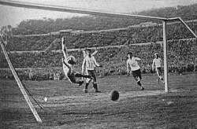
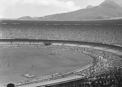
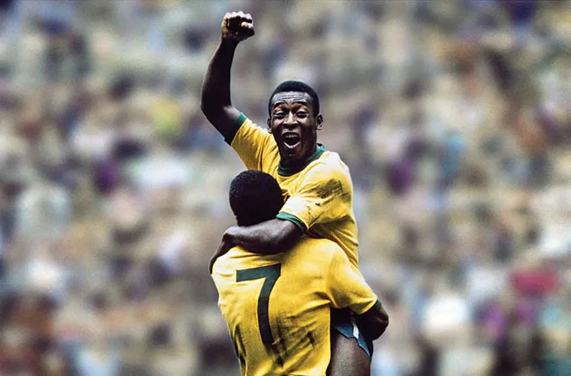
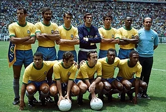
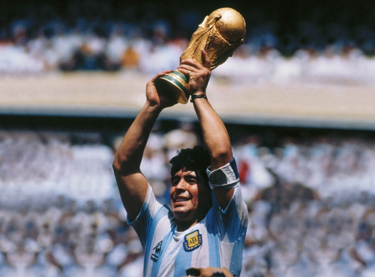
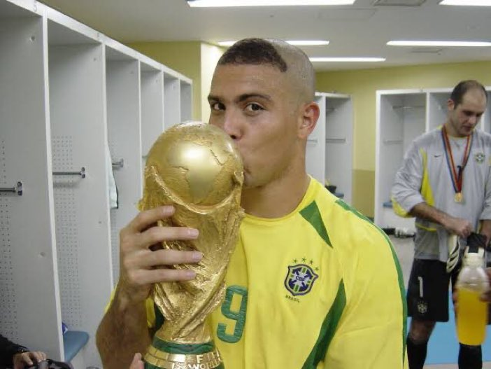
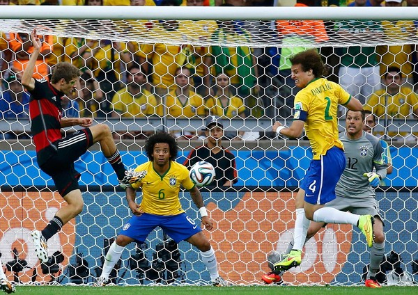
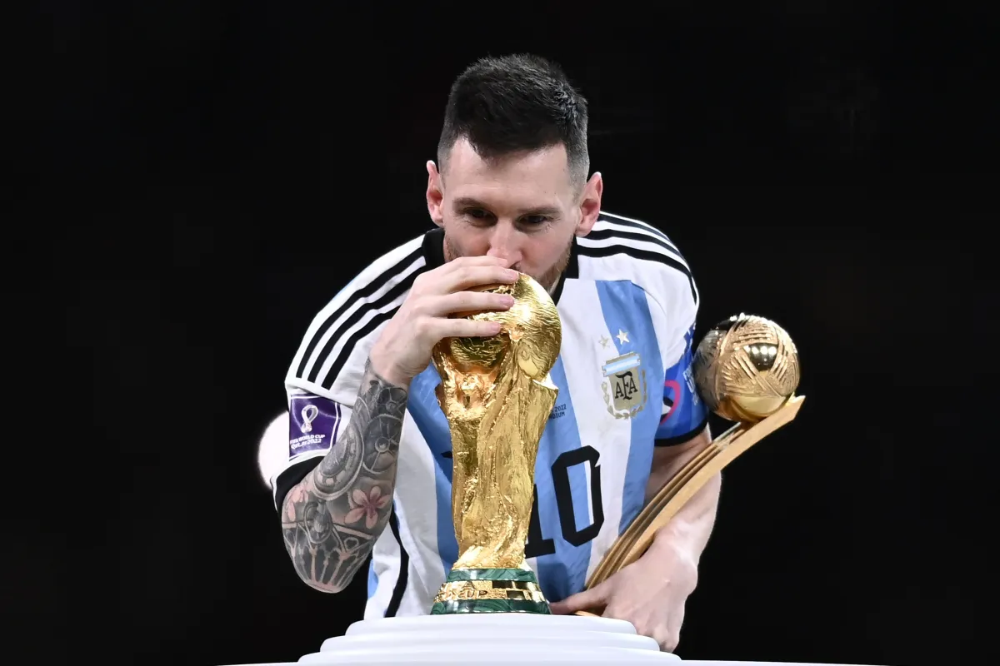

1930: O início de tudo

A primeira Copa do Mundo foi realizada no Uruguai em 1930, com 13 seleções participantes. O Uruguai venceu a Argentina na final com um placar de 4x2, diante de uma multidão em Montevidéu.
O torneio foi idealizado por Jules Rimet, presidente da FIFA, e a taça original levou o seu nome.
1950: O Maracanazo

A Copa de 1950 foi sediada pelo Brasil. Com cerca de 200 mil pessoas no estádio Maracanã, o Brasil precisava apenas de um empate para ser campeão.
O Uruguai virou o jogo com um placar de 2x1 e calou o estádio. A derrota ficou conhecida como "Maracanazo" e marcou gerações brasileiras.
1958: Pelé encanta o mundo

Com apenas 17 anos, Edson Arantes do Nascimento, conhecido como Pelé, estreou na Copa do Mundo na Suécia e marcou 6 gols, incluindo um hat-trick na semifinal.
O Brasil venceu a seleção da Suécia na final por 5x2 e conquistou seu primeiro título mundial.
1970: A Copa mais bonita

O Brasil de Pelé, Tostão, Rivellino e Jairzinho é considerado o melhor time da história. No México, a seleção todos os seis jogos, marcou 19 gols e conquistou o tricampeonato.
Com o terceiro título, o Brasil ficou com a Taça Jules Rimet definitivamente.
1986: Maradona e o gol do século

No México, Diego Armando Maradona liderou a Argentina ao título. Nas quartas de final contra a Inglaterra, ele marcou dois dos gols mais famosos da história.
O "Gol da Mão de Deus" e o "Gol do Século", eleito o maior gol de todos os tempos, ficaram pra sempre na memória do futebol.
2002: Ronaldo Fênomeno

Artilheiro com oito gols, Ronaldo marcou os dois da final contra a Alemanha. O Brasil conquistou o pentacampeonato e Ronaldo se tornou o maior artilheiro das copas, com 15 gols no total.
2014: O 7x1

na semifinal da copa do mundo sediada no Brasil, a seleção brasileira foi goleada pela Alemanha com um placar de 7x1 no estádio Mineirão, em Belo Horizonte.
O resuktado chocou o país e o mundo e entrou para a história como uma das maiores goleadas em semifinais de Copas do Mundo.
2022: Messi conquista a taça

No Catar, Lionel Messi disputou sua quinta Copa do Mundo. Após uma final épica contra a França, e com um placar de 3x3 no tempo normal, a Argentina venceu nos pênaltis.
Messi, eleito o melhor jogador do torneio, finalmente levantou a taça que faltava em sua carreira.